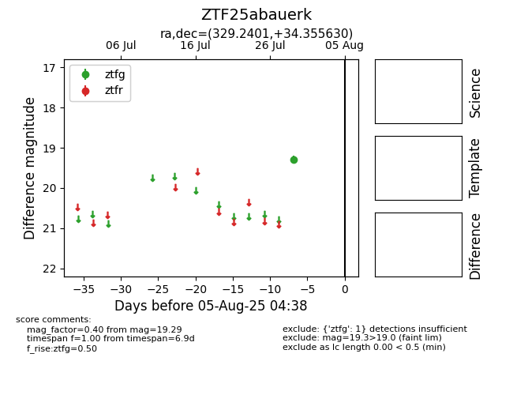

Target ZTF25abauerk at 2025-08-05 04:38, see:
FINK: fink-portal.org/ZTF25abauerk
Lasair: lasair-ztf.lsst.ac.uk/objects/ZTF25abauerk
ALeRCE: alerce.online/object/ZTF25abauerk
alt names
ZTF25abauerk (ztf,fink)
coordinates:
equatorial (ra, dec) = (329.2401,+34.35563)
galactic (l, b) = (86.6128,-15.93672)
photometry
last ztfg=19.29
1 ztfg detections
